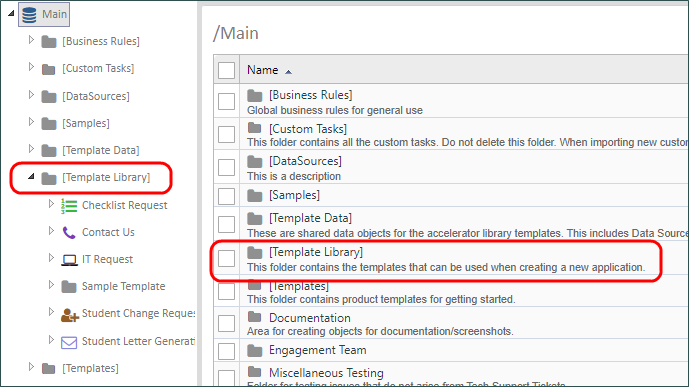
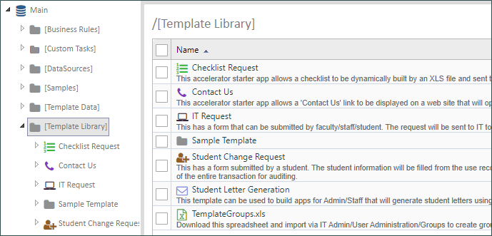
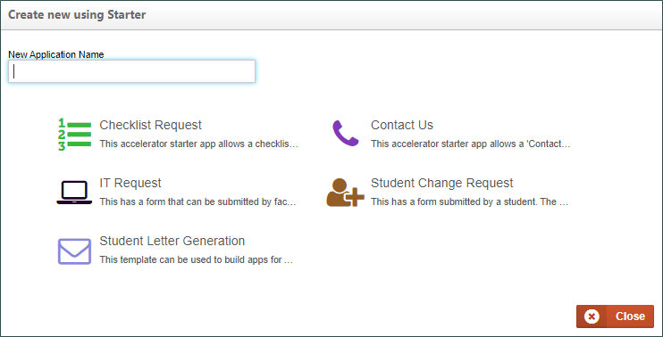

For customers who have a Subscription license for Process Director v5.31 and higher, the Template Library enables you to easily replicate an existing Template as a new application.
Many organizations have specific design guidelines that they would like to see replicated in any application. For instance, a specified logo, color, or font might be required to display on each form exposed to end users, along with some commonly required Form fields. Additionally, system administrators might want to provide one or more "shell" applications with an associated Form and Process Timeline already provided for each new application, simply to save on the time and tedium of creating the same objects from scratch. Templates enable you to achieve those objectives easily.
A Template is a pre-made template application, containing all of the design features and functionality you desire, to use as the basis of a new object. The Template can be as simple as a single form with some font and color styling, or as complicated as a fully functional application that you need to replicate. Any Process Director object, or collection of objects, can be used as a Template.
Once you have created a template, the Template Library feature enables you to select that template as the starting point for a new application by copying the existing template and placing the copy of it in any desired location on your Process Director installation. All of the existing configuration options of the template objects will be replicated in the new application.
For the Template Library feature to work properly, you must have a [Template Library] folder at the root level of the partition.

If you do not have this folder installed by default, you can simply create it at the root level of the partition. Once you have done so, you now have a template container folder that can be used for that partition. If you have multiple partitions on your installation, each partition will require its own [Template Library] folder.
BP Logix provides some pre-built template applications in this Library for Process Director Higher Education Edition. For these pre-built templates to work, there is, additionally, a [Template Data] folder that includes connections to some external data for use in the pre-built template applications. This folder is required for the pre-built applications to work properly. Some applications may also have additional Excel spreadsheets with administrative items like user Groups that must be edited and/or imported into your system prior to use. One such spreadsheet is contained in the [Template Library] folder, and is named TemplateGroups.xls.
Inside the [Template Library] folder, each template must reside in its own subfolder.

In this example, there are five different Templates that contain the appropriate Forms, Process Timelines, and subfolders for Business Rules and Knowledge Views. When using the Template Library feature, all of the objects in the selected [Template Library] subfolder will be replicated into the location you desire.
To use the Template Library feature, first navigate to the location in which you would like to create the application. Then, select the [Start from Template] option from the Create New... dropdown menu.
The Create new using Starter dialog box will open to display the list of [Template Libraries] subfolders from which you can select the desired template. All of the existing Template templates will be shown as clickable buttons.

In the New Application Name text box, type the name you want for your new application. The name you type here will be used to name the folder that will contain your new application. Below the New Application Name text box, a list of all of the template folders contained in your [Template Library] folder will appear. In the case of this example, we have the Template folders we referred to above. Simply click on the desired template folder to select it. When you do so, a confirmation dialog box will appear, asking you to confirm this choice.
Once you confirm the choice in the dialog box, process director will automatically copy the template into a new folder in the location you chose.
I this example, we used "New Application" as the name for our sample application.

The New Application folder displays the name we provided in the New Application Name text box. Additionally, the names of the template objects will also display the same name, "New Application", appended to the original object name. Objects in subfolders will be similarly renamed. A success message will also appear, notifying you that the application is ready for editing. You can now configure the new objects as you desire.